Quick and Dirty
Dominic Langenegger
What is Node.js
- Server-side JavaScript
- Powered by Google's V8
- Evented, non-blocking I/O
Like JavaScript in the browser but
with modules that make it useful on the server
Ryan Dahl's original Node.js talk
November 8, 2009
I/O needs to be done differently
Waiting for the Database
var result = db.query("select * from users");
// use result
Either blocks entire process or implies threads


Asynchronous I/O
var result = db.query("select * from users", function (result) {
// use result
});
JavaScript Event Loop
- single-threaded
- non-blocking
- asynchronous
- concurrent
Event Loop
Event Loop
Event Loop
Event Loop
Event Loop
Event Loop
Event Loop
Event Loop
Event Loop
Event Loop
Event Loop
Event Loop
Event Loop in Node.js
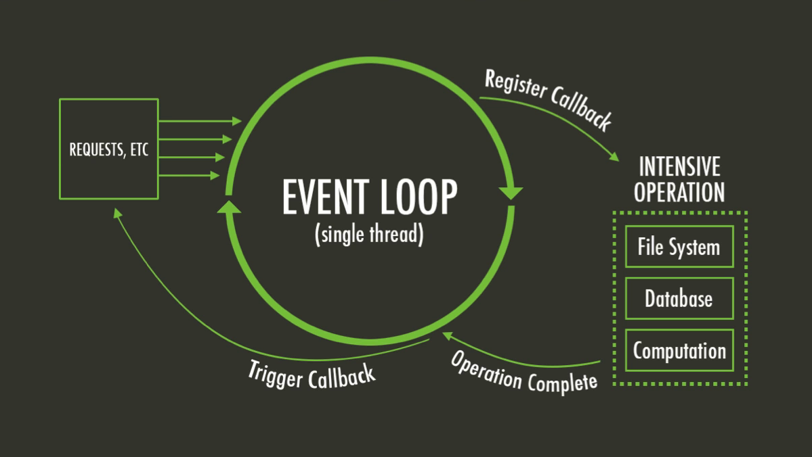My first Webserver
// Load the http node module to create an http server.
const http = require('http');
// HTTP server that responds with Hello World to all requests
const server = http.createServer(function (request, response) {
response.writeHead(200, {"Content-Type": "text/plain"});
response.end("Hello World\n");
});
// Listen on port 8000
server.listen(8000);
// Put a friendly message on the terminal
console.log("Server running at http://127.0.0.1:8000/");
No ...
- Application Server
- Threads
- Dependencies
- Types
Modules Ecosystem
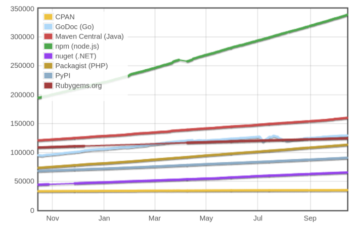As easy as:
$ npm install --save express
# in code
const express = require('express');
Express.js
const express = require('express');
const fs = require('fs');
const app = express();
app.get('/downloadFile/:filename', function (req, res) {
fs.createReadStream(req.params.filename)
.pipe(res);
});
app.listen(8000, function () {
console.log('File server listening on port 8000!');
});
Express.js
- Routing
- Middlewares
- Static Files
- Session Handling
- Logging
- ...
- Template Engines
It will!
Just run multiple instances!
- +
- Rapid development
- Fast non-blocking i/o
- Code sharing
- -
- CPU heavy tasks
- Callback hell
- Types...